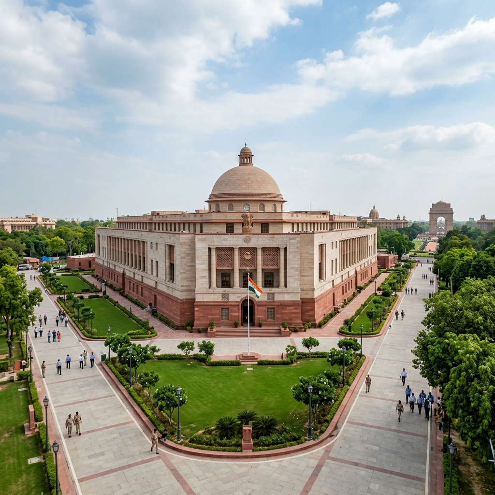

← Back to National Appointments Main Page
Constitutional Appointment Mechanisms: Judiciary & Election Commission
For BPSC Prelims, detailed knowledge of constitutional articles and the evolution of appointment mechanisms (such as the Judges Cases) is of paramount importance.

The Parliament of India, where statutory appointment acts (like the CEC Act 2023) are debated and enacted.
1. The Judicial Collegium System (STATICS)
The Collegium system is the mechanism for appointing judges of the Supreme Court and High Courts. It is not mentioned in the Constitution of India; it evolved through three landmark judgments of the Supreme Court known as the **Three Judges Cases**.
Historical Evolution (Background):
- First Judges Case (1981): Held that "consultation" in Article 124 does not mean "concurrence". The Executive had the final word in appointments.
- Second Judges Case (1993): The Supreme Court reversed its ruling. Held that "consultation" means "concurrence". It established the **Collegium System**, consisting of the Chief Justice of India (CJI) and the **two senior-most associate judges**.
- Third Judges Case (1998): Following a presidential reference under Article 143, the Supreme Court expanded the collegium. It now consists of the CJI and **four senior-most associate judges** (for SC appointments) or **two senior-most associate judges** (for HC appointments).
Constitutional Provisions:
- Article 124(2): Supreme Court judges are appointed by the President after "consultation" with SC/HC judges as the President deems necessary.
- Article 217(1): High Court judges are appointed by the President after consultation with the CJI, the State Governor, and the Chief Justice of that High Court.
2. Chief Election Commissioner & EC Appointments (STATICS)
⚖️ The CEC and Other ECs (Appointment, Conditions of Service and Term of Office) Act, 2023:
• Selection Committee: Comprises the Prime Minister (Chairperson), a Union Cabinet Minister (nominated by PM), and the Leader of the Opposition (or leader of largest opposition party in Lok Sabha).
• Search Committee: Led by the Cabinet Secretary, preparing a panel of five persons for the Selection Committee.
• Article 324(2): Mentions that the appointment of CEC and other ECs shall be made by the President, subject to provisions of any law made by Parliament.
3. Current Ongoing Relevance (2025-2026)
The CEC Act 2023 has faced constitutional challenges in the Supreme Court regarding the exclusion of the Chief Justice of India (CJI) from the Selection Committee (reversing the interim panel established in the *Anoop Baranwal v. Union of India* case). In 2024-2025, several senior appointments (including new Election Commissioners Gyanesh Kumar and Sukhbir Singh Sandhu) were made under this new statutory framework.
← Back to National Appointments Main Page